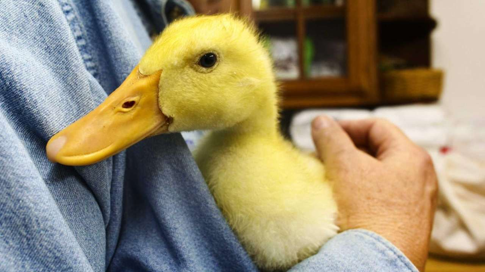
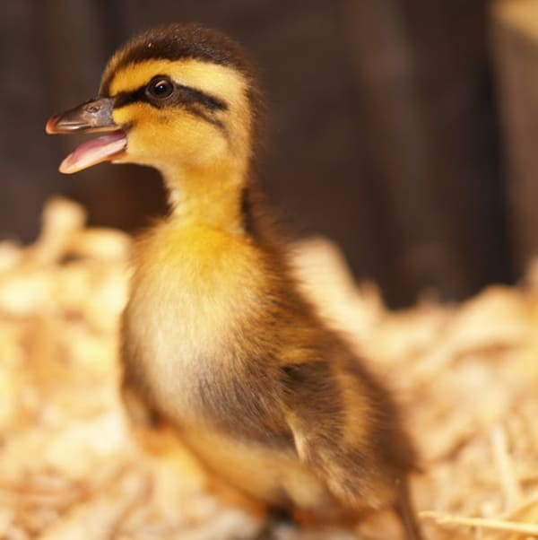
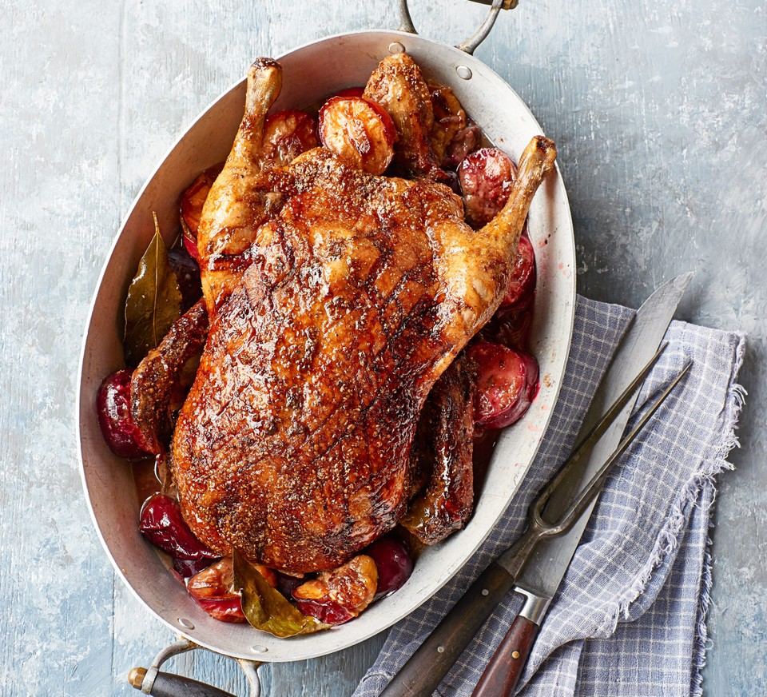

An adorable duck being used as support pal for
someone. Can't this convince you to get a duck?
Great emotional support!
I mean c'mon, sure they can't talk but their cuteness and fuzzy layer
is enough to get you awing for them! That and the fact that their
annoying honks can keep you distracted from whatever is
going on in your life. Just don't kill them out of rage!

Just too heartwarming! Melts my own heart!
They are just SO adorable!
Nobody, and I mean it, NOBODY can deny the cuteness
of these adorable creatures! Can you get enough of their absolutely
innocent eyes, their stupendous texture when you put them against your
face, and their absolute cute waddling?! I'm sure you cant!

Mouth watering innit
They make great sources of protein!
Look, I know that I'm talking about pets here, but I find absolutely
no reason as to why you shouldn't eat your pets! Look, it may sound
stupid, but think about it. If you are bored and you need a little
spice in your life (and maybe your pet duck has been getting pretty
annoying), just kill and eat it! Ducks provide a great source of
protein and are absolutely yum!